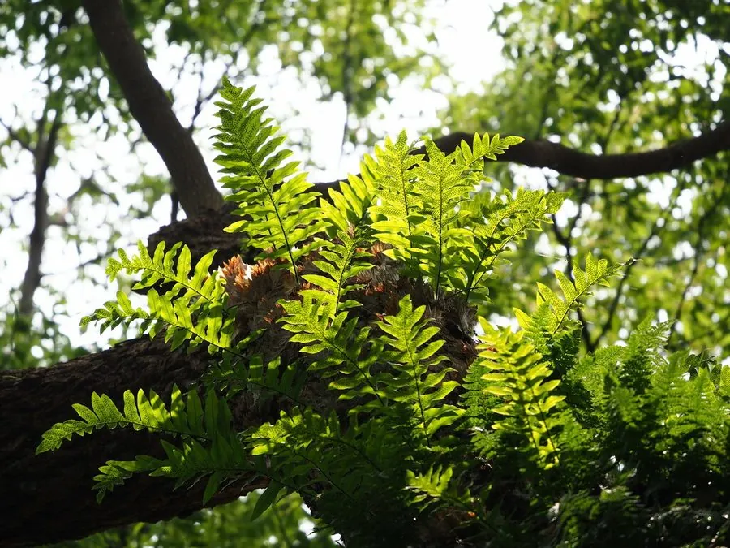

蕨类与裸子植物 · 植物界
槲蕨 Drynaria roosii

槲蕨是附生蕨类，基部叶片干枯后变成褐色“储水叶”包住根状茎，中药“骨碎补”就来自它的根状茎。
- 分类
- 门蕨类植物门纲水龙骨纲目水龙骨目科水龙骨科属槲蕨属
- 栖息环境
- 树干、岩石与墙面，喜温暖湿润半阴
- 地理分布
- 中国长江以南各地，东南亚也有分布
- 保护级别
- 暂无评估；野生资源因药用采挖下降
物种志
槲蕨是水龙骨科附生蕨类，株高 20–50 cm。根状茎粗壮、肉质，长而横走，密生鳞片。叶二型：基部的“槲叶”不育，干枯后变成褐色、纸质，覆盖在根状茎上，能收集腐殖质和保持水分；上部的孢子叶绿色，羽状深裂，叶背着生圆形孢子囊群。
槲蕨喜温暖湿润、半阴环境，常附生于树干、岩石和墙面上，在南方山区很常见。它以孢子繁殖，根状茎匍匐蔓延，栽培时多绑缚在树干或石板上附生种植。槲蕨的根状茎在中药里称“骨碎补”，有补肾强骨、续伤止痛之效，用于跌打损伤与肾虚腰痛，因此被大量采挖。它形态奇特、耐阴好养，也是附生造景和庭院装饰的常用材料。
形态与习性
- 株高20–50 cm
- 叶二型，基部为干枯的储水叶
- 孢子叶羽状深裂，叶背着生孢子囊群
- 药用根状茎入药称“骨碎补”
- 习性附生，喜阴湿
趣味知识
- 槲蕨基部的叶子干枯后变成褐色，像瓦片一样盖住根状茎，能储水防旱。
- 中药“骨碎补”就是槲蕨的根状茎，用于跌打损伤。
- 它常附生在树干和石墙上，是南方常见的附生蕨类。